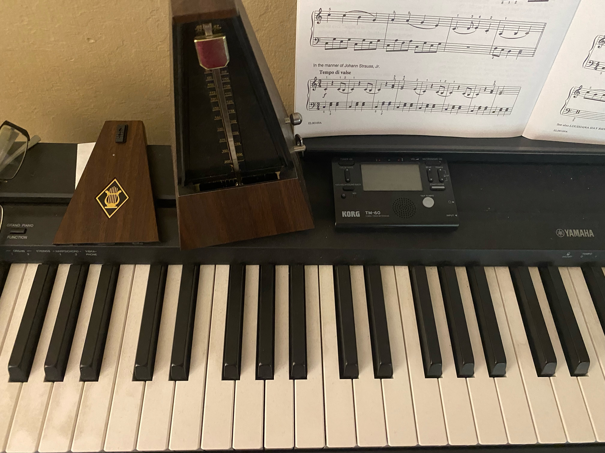

Beginner's Piano Lessons
Consider this the Noob's First Stop
Welcome to Piano Basics
There is a lot of research on the benefits of learning music. I won't go into that here (at least not today). We are going to go really, really slow learning the music basics. No need to purchase music at this time. You will finish these lessons and move forward on your learning journey by yourself or with a music teacher if you like.

Picture of my keyboard piano and 2 types of metronomes.
Supplies
- Keyboard/Piano: You can start with a kid's keyboard, a 66-key very affordable keyboard, or an app of a keyboard. When starting out, access to a nice piano should not be the barrier you imagine it to be. Looking at my piano in the picture, you can see the dust that has added up. No shame here on the simplicity of your piano.
- Confidence: The most important supply is going to be your confidence to step into a new realm. Some people can feel very odd, almost like an imposter, trying something new. This is true if you are a teenager or adult. It is never too late to learn.
- Time: The time commitment starts slow. Iniitally you need 5 minutes a day. It will increase the more you learn.
- Commitment: The brain only learns with consistency. Thinking you can binge with large portions of time a week to learn is unrealistic for most. I know we all loathe coming to terms with our limitations, but please do.
- Mental Flexibility: So the reason we all avoid the commitment for at least 3-5 days a week of practice is becasue the mental fatigue may set in since we're not used to the mental flexibility to take on this hurdle.
- Resources: I've got the resources here - piano music, short clips, and some other ideas on moving forward and supporting your practice.